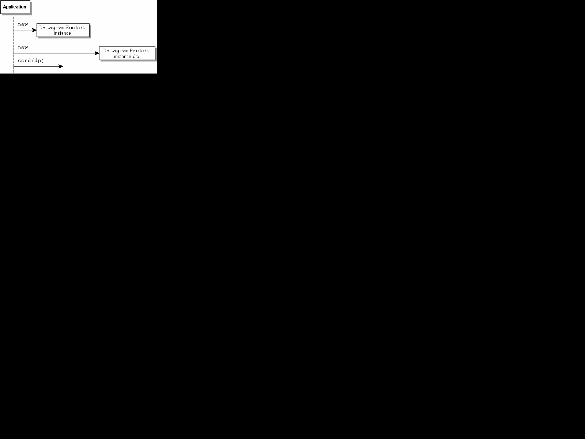

Java 네트워크 API (java.net)는, 다음의 기능을 실행하기 위한 인터페이스/클래스를 제공합니다.
이 문서의 목적은,java.net 패키지가 제공하는 기능의 고레벨인 개요를 설명하는 것입니다. 인터페이스, 클래스, 및 팩토리의 상세한 것에 대하여는,「Networking API」 를 참조해 주세요. 네트워크의 기본적인 개념에 대해서는, 「Java Tutorial」의「Trail:Custom Networking」를 참조해 주세요.
java.net 는, 이하의 주소 관련 클래스를 제공합니다.
IP 주소 지정에는,InetAddress,Inet4Address, 및 Inet6Address 라고 하는 3 개의 클래스가 제공되고 있습니다. InetAddress 는, 32 비트 또는 128 비트의 부호를 붙일 수 있지 않은 수치로, IP 프로토콜에 의해 사용되는 IP 주소를 나타냅니다. IP 프로토콜은, TCP 나 UDP 의 구축 기반이 되는 하위 레벨의 프로토콜입니다. 32 비트의 IPv4 주소를 나타내기 위해서(때문에),Inet4Address 가 제공되고 있습니다. IPv4 주소는,nnn.nnn.nnn.nnn 라고 하는 잘 알려진 형식에서 지정합니다. n 는 정수를 나타내, 예를 들어 129.250. 35.250 과 같이 됩니다. 이 클래스는 InetAddress 의 서브 클래스입니다. 128 비트의 IPv6 주소를 나타내기 위해서(때문에),Inet6Address 가 제공되고 있습니다. 이 클래스도 InetAddress 의 서브 클래스입니다.
소켓 주소 지정에는,SocketAddress 와 InetSocketAddress 라고 하는 2 개의 클래스가 제공되고 있습니다. SocketAddress 는, 특정의 프로토콜에 의존하지 않는추상적인소켓 주소입니다. 이 클래스는, 특정 프로토콜용의 서브 클래스의 작성을 목적으로 하고 있습니다. 다음의 InetSocketAddress 는, 이 서브 클래스의 예입니다. InetSocketAddress 는,SocketAddress 의 서브 클래스에서, IP 소켓 주소를 나타냅니다. 이 주소는, IP 주소 (129.250. 35.250 등)과 포트 (80 등), 호스트명 (coastnews.com 등)과 포트 (1000 등), 또는 포트만 (1010 등)을 포함할 수가 있습니다. 포트만의 경우, 와일드 카드의 IP 주소와 상정됩니다.
이하의 클래스는, 일반적으로의 TCP 접속의 확립에 관계하는 클래스입니다.
ServerSocket Socket클라이언트와 서버간의 단순한 접속의 경우, 일반적으로,ServerSocket 와 Socket 만으로 필요한 기능은 모두 제공됩니다.
ServerSocket 는, 서버상에서 클라이언트로부터의 서비스 요구를 대기하는 소켓을 나타냅니다. Socket 는, 서버와 클라이언트간의 통신의 엔드 포인트를 나타냅니다. 서버는, 서비스의 요구를 받아들이면(자), 클라이언트와의 통신을 위해서(때문에) Socket 를 작성해, 계속 ServerSocket 상에서 다른 요구를 대기합니다. 클라이언트도 서버와의 통신을 위해서(때문에) Socket 를 작성합니다. 이하의 그림에 그 흐름을 나타냅니다.
접속의 확립 후에, 소켓간의 통신으로,getInputStream() 와 getOutputSteam() 가 사용되는 경우가 있습니다.
이하는, UDP 를 사용한 데이터 그램 패킷의 송수신에 관계하는 클래스입니다.
DatagramPacketDatagramSocketDatagramPacket 는, 데이터 그램 패킷을 나타냅니다. 데이터 그램 패킷은, 무접속 전달로 사용되어 일반적으로은 행선지의 주소와 포트에 관한 정보가 포함되어 있습니다. DatagramSocket 는, 네트워크상에서 UDP 를 사용해 데이터 그램 패킷을 송수신 하기 위해서 사용되는 소켓을 나타냅니다. DatagramPacket 는,send(DatagramPacket dp)인수와 같이,DatagramSocket 의 send(...) 메소드를 호출해,DatagramPacket 를 건네주는 것에 의해,DatagramSocket 로부터 송신됩니다. DatagramPacket 를 수신하려면 ,receive(DatagramPacket dp) 를 사용합니다. MulticastSocket 클래스를 사용하면(자), 멀티 캐스트 그룹에 대한 DatagramPacket 의 송수신을 실시할 수가 있습니다. 이 클래스는, 멀티 캐스팅 기능을 추가하기 위한 DatagramSocket 의 서브 클래스입니다.
[D]
이하의 클래스는, 네트워크 자원의 검색과 식별에 관계하는 클래스입니다.
URI URL URLClassLoader URLConnection URLStreamHandlerHttpURLConnectionJarURLConnection가장 일반적으로 사용되는 클래스는,URI,URL,URLConnection, 및 HttpURLConnection 입니다.
URI 는, 자원용의 URI (Uniform Resource Identifier)를 나타냅니다. URI 는, 자원의 식별자입니다만, 그 자원의 locator가 될 필요는 없습니다. URL 는, 자원용의 URL (Uniform Resource Locator)를 나타냅니다. URL 는 URI 의 부분집합입니다만,URL 클래스는,URI 클래스의 서브 클래스가 아닙니다. 즉, URL 는 자원에의 액세스 방법을 나타내, URI 는 액세스 방법을 나타내는 경우와 가리키지 않는 경우가 있습니다. Uniform Resource Name (URN)도 URI 의 부분집합입니다. 다만, URN 를 나타내는 Java 클래스는 없습니다.
URLConnection 는, 어플리케이션과URL 에 의해 식별되는 네트워크 자원과의 사이의 접속을 나타내는 추상 슈퍼 클래스입니다. URL 가 지정되어 그것에 의해 프로토콜이 지정되면(자),URL.openConnection() 는, 그 프로토콜의 URLConnection 의 적절한 구현을 돌려줍니다. 프로토콜은,URL 로부터 인식할 수가 있습니다. 이 인스턴스는, 실제로 접속을 열어 URL 에 액세스 하는 URLConnection.connect() 를 제공합니다.
HttpURLConnection 는, 가장 일반적으로 사용되는 URLConnection 의 구현입니다. 이것은, Web 서버의 컨텐츠에 액세스 하기 위해서 사용되는 http 프로토콜용의 구현입니다. 위의 그림에서는,URL 의 액세스 프로토콜이 http 의 경우,openConnection() 메소드에 의해 HttpURLConnection 의 인스턴스가 돌려주어집니다.
시큐리티에 관해서는, 인증과 액세스권에 관계하는 클래스를 사용합니다. 인증은, 사용자의 인증에 관계해, 사용자명과 패스워드의 체크를 포함합니다. 사용자가 URL 에 액세스 하려고 했을 경우 등, 많은 경우, 사용자의 인증이 필요하게 됩니다. 액세스권은, 실행 가능한 처리에 관계합니다. 예를 들어,NetPermission 객체 "setDefaultAuthenticator" 가 존재하지 않는 경우에,Authenticator.setDefault(Authenticator a) 를 불러 출 내면(자), 시큐리티 예외가 발생합니다.
프록시나 원의 서버의 일부에서는, BASIC 나 DIGEST 등의 인증 방식을 사용한 인증 정보가 필요합니다. 예를 들어 프록시 경유로 http 에 의한 접속을 해, 프록시에서는 인증이 필요한 경우는,Authenticator 클래스를 호출해 사용자명, 패스워드, 및 인증에 필요한 그 외의 항목을 가져옵니다. 인증에 관련하는 클래스는 다음과 같습니다.
AuthenticatorPasswordAuthentication사용자 인증 뿐만이 아니라,abstract 클래스인 Authenticator 에는, 요구되고 있는 인증에 대해 쿠에리 하는 메소드도 있습니다 (getRequestingXXX() 참조). 일반적으로 이 클래스는, 서브 클래스화 되어setDefault(Authenticator a) 를 호출하는 것에 의해 서브 클래스의 인스턴스가 시스템에 등록됩니다. 시큐리티 매니저가 존재하는 경우는, 시큐리티 매니저가, 시큐리티 정책에 의해 NetPermission "setDefaultAthenticator" 가 허가될지 어떨지를 체크합니다. 시스템이 인증을 필요로 하는 경우, 시스템은,requestPasswordAuthentication() 등의 메소드를 호출합니다.
PasswordAuthentication 는, 단순하게 사용자명과 패스워드를 포함하는 데이터 홀더입니다.
SocketPermissionNetPermissionSocketPermission 는,접속,수락,대기,해결등의 그 호스트상에서 실행할 수 있는 일련의 처리와 호스트 및 옵션의 포트 범위로 구성됩니다. 이 클래스는, 1 개의 SocketPermission 가, 다른 Permission 와 동일한지 어떤지, 혹은 다른 Permission 를 의미하는지 어떤지를 판단하기 위한 메소드를 포함하고 있습니다. SocketPermission 을 PermissionCollection 에 포함하면(자), 액세스권의 유무를 간단하게 체크할 수 있게 됩니다.
NetPermission 는, 다양한 이름 첨부 네트워크 액세스권을 나타내기 위한 클래스입니다. 현재, 상기의 setDefaultAuthenticator,requestPasswordAuthentication, 및 specifyStreamHandler 의 3 개의 네트워크 액세스권이 있습니다. NetPermission 을 PermissionCollection 에 포함하면(자), 액세스권의 유무를 간단하게 체크할 수 있게 됩니다.
액세스권의 상세한 것에 대하여는,http://java.sun.com/j2se/1. 5.0/ja/docs/ja/guide/security/permissions.html 를 참조해 주세요.